Vanaf 12 oktober
Wildmenu
Gerechten die uitstekend bij het seizoen passen. Houd onze social media in de gaten voor het menu.
Raadhuisplein 7, Nistelrode
Eetcafé in de dorpskern, aan het Raadhuisplein bij de dorpspomp. Lunch, diner, een borrel aan de bar of op het grote terras onder de lindebomen.
Gastvrijheid die zich vertaalt in een gemoedelijke sfeer waarin elke gast zich welkom voelt. Dezelfde sfeer zie je terug in onze gerechten: toegankelijk, smaakvol en bereid, als dat kan, met producten uit de streek.
Waar wil je zitten? Aan de bar, in een van de zithoekjes, in de ‘goei’ kamer of in de tuinkamer met uitzicht op het terras. En als het weer meezit: op ons grote terras, beschut door parasols en de lindebomen voor de zaak.
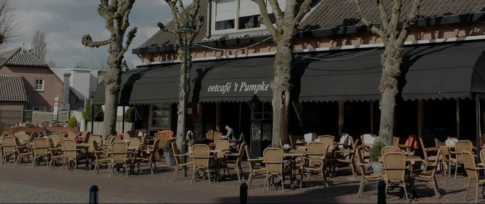
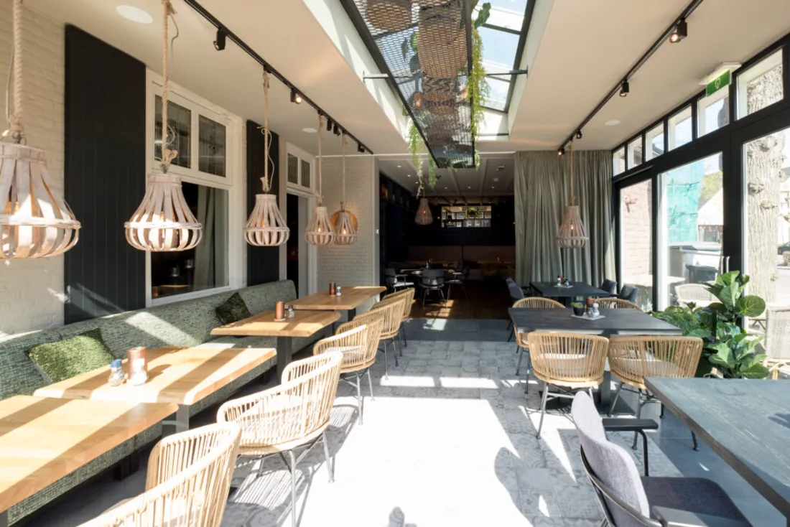
Lunch tot 16.00 uur, daarna de dinerkaart. Heeft u een allergie? Laat het ons weten. Eventuele sporen van allergenen kunnen niet worden uitgesloten.
Al onze soepen worden geserveerd met vers gebakken brood.
Keuze uit Italiaanse bol, wit of bruin brood.
Keuze uit wit of bruin brood.
24,95 per persoon
Klein soepje, sandwich kalfsrosbief, wrap gerookte zalm, kerrie-massala kroketje, tonijnsalade, ei-truffelsalade, broodje carpaccio, brood en zoete lekkernijen. En dat allemaal bij u op tafel!
Reserveren een dag van tevoren, minimaal 2 personen.
Al onze lunchgerechten zijn verkrijgbaar tot 16.00 uur. Lunchkaart als PDF
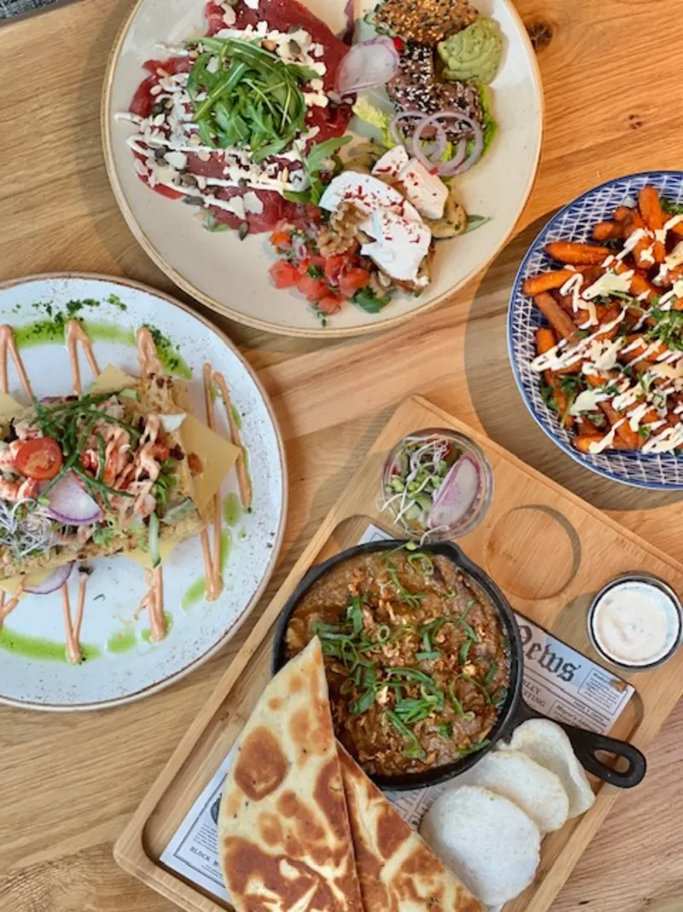
38,95 per persoon
Een voorgerecht-trio, twee hoofdgerechten naar keuze en een dessert. Lekker samen proeven.
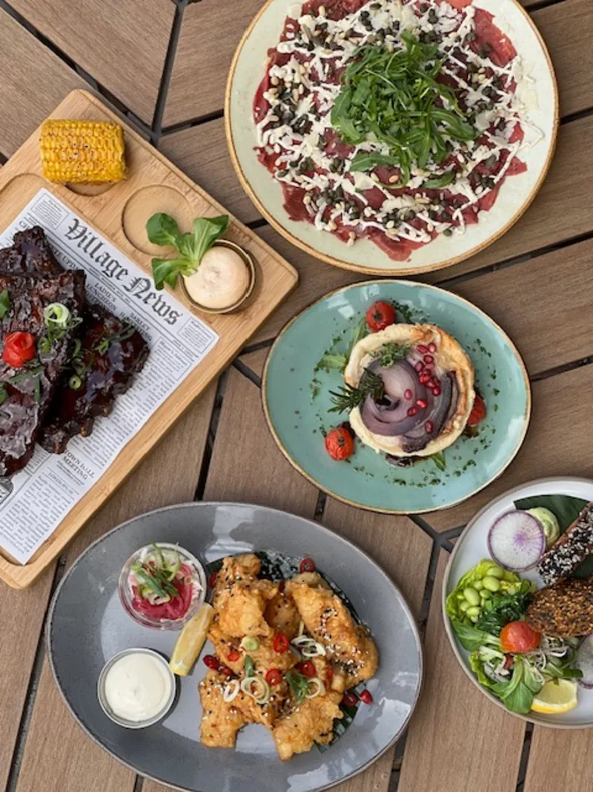
Al ons ijs wordt huisgemaakt bij IJssalon De Buren.
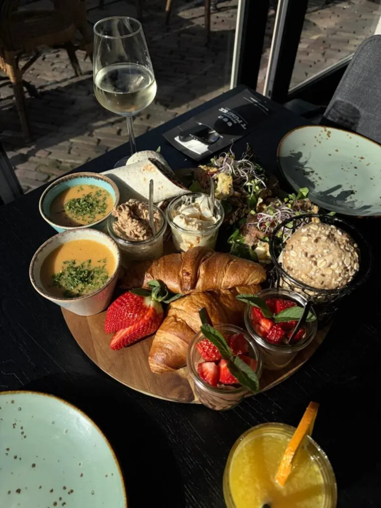
Favoriet
27,00 voor 4 personen
Brood, serranoham, kruidenboter, aïoli, olijven, nootjes, bitterballen en nacho’s.
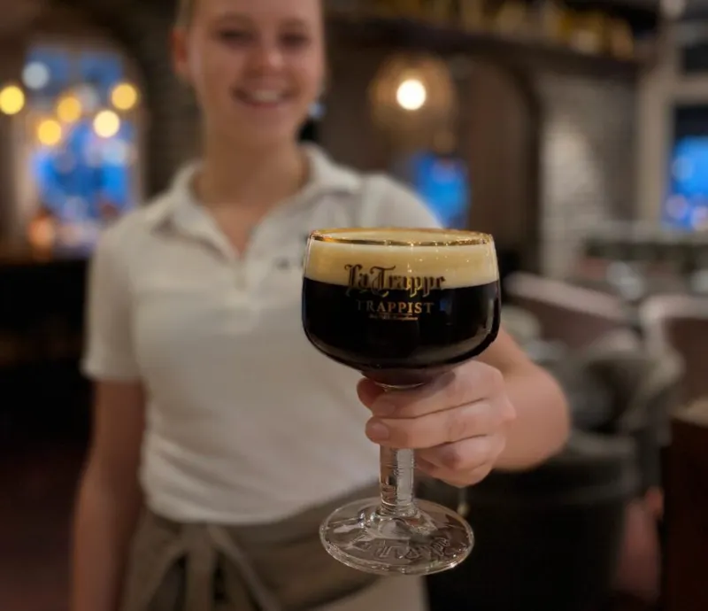
Lekker speciaalbiertje bij het eten? Vraag ook eens naar onze bierkaart.
Heerlijk genieten zonder zorgen en rommel. Onze chefs hebben een feestelijke 4-gangen kerstproeverij samengesteld: bourgondisch, verrassend en met liefde bereid. Er is voor ieder wat wils en ook aan de kleintjes is gedacht.
57,50 per persoon
27,50 t/m 12 jaar
In de middag hanteren wij een tijdslot van 3,5 uur. Reserveren doet u door een mail te sturen.
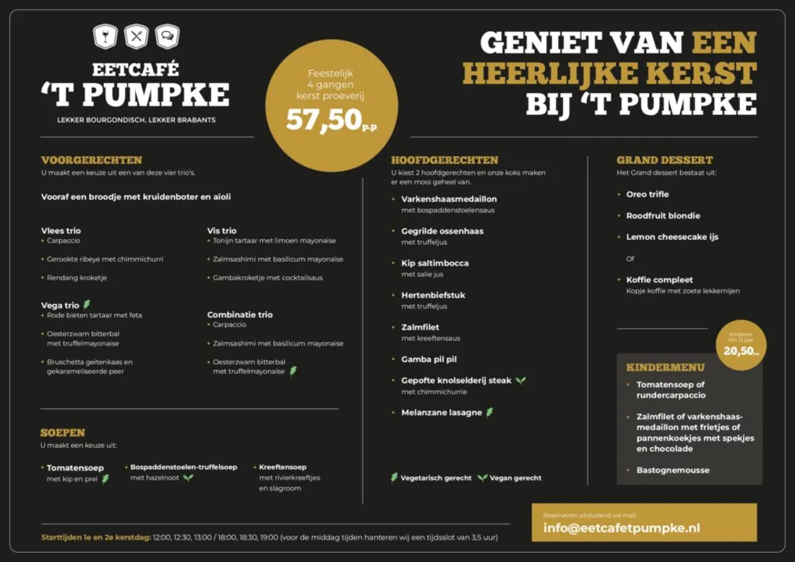
Vanaf 12 oktober
Gerechten die uitstekend bij het seizoen passen. Houd onze social media in de gaten voor het menu.
Zondag 27 december
Tussen kerst en oud en nieuw lekker naar buiten. Routes door het buitengebied van Bernheze, uitgezet door Scouting Mira Ceti en De Meierijsche Museumboerderij. Start bij ons of bij de museumboerderij, Meerstraat 28 in Heeswijk-Dinther. museumboerderij.nl
Met collega’s even bijpraten, een familie-uitje, een feest of een vergadering. Eetcafé ’t Pumpke en ’t Brouwhuis bieden alle ingrediënten voor een sfeervolle bijeenkomst. Ook voor een intieme koffietafel na een afscheid bieden wij een warme en respectvolle omgeving.
Hieronder een greep uit onze arrangementen. Alles staat in de arrangementenfolder. Vragen? Neem contact op voor een afspraak in het restaurant.
Arrangementenfolder (PDF)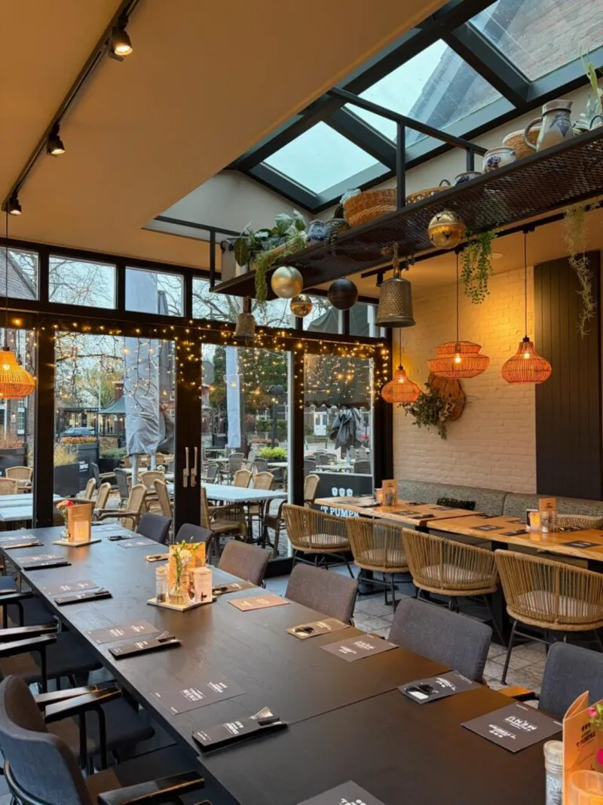
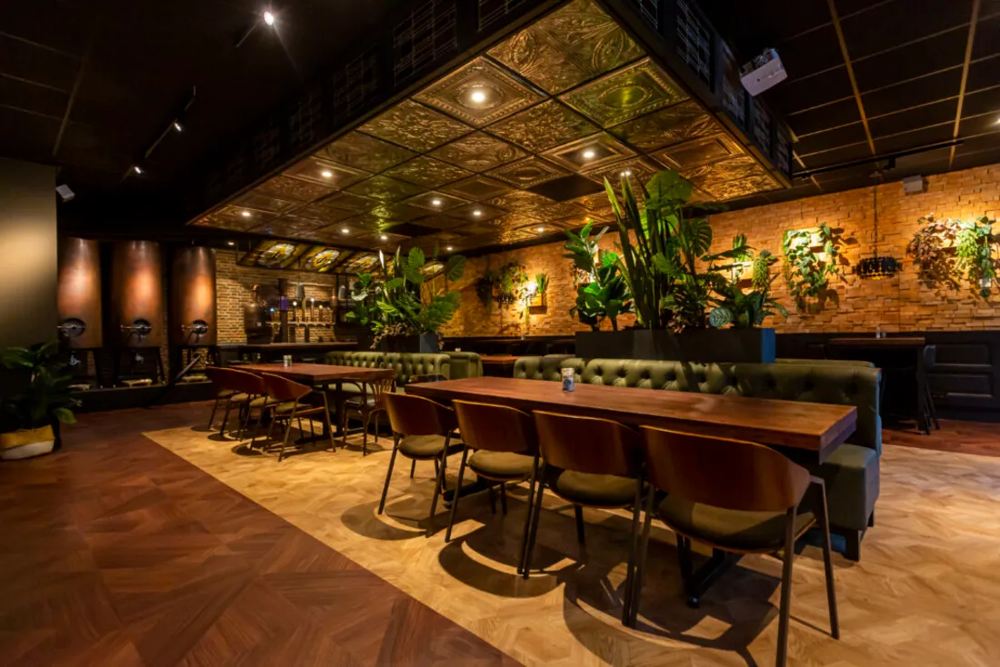
Voor afwijkende aantallen of wensen: neem gerust contact op, 0412 612 956.
Rustig en lekker bourgondisch tafelen vóór je theaterbezoek. Voor € 35,00 (exclusief drank) serveren wij een 3-gangen theatermenu. Reserveren doe je na het kiezen van je zitplaatsen bij Nesterlé; je wordt uiterlijk om 17.30 uur bij ons verwacht.
nesterle.nlWandelen en fietsen door de natuur en de unieke wijstgronden van de Maashorst, met ’t Pumpke als start- of eindpunt. Begin met koffie en gebak of eindig met een diner. Wij hebben fietsroutes uit de omgeving liggen.
natuurgebieddemaashorst.nlSamen naar The Temple Challenge en voor of na het tempelen bij ons dineren. Of laat een buffet komen op de locatie van The Temple Challenge. Reserveren gaat via hun website.
templechallenge.nlEen fietsroute vol natuur langs De Maashorst, de Heeswijkse Bossen en het Leijgraafdal, met onderweg vijf culinaire stops. Het nagerecht eet je bij ’t Pumpke. Arrangement € 47,95 p.p.
Route en reserveren’t Pumpke ligt aan het Raadhuisplein, bij de dorpspomp. Dan weet je meteen hoe wij aan onze naam komen. We zijn trots op onze historie, en vooral op de mensen die op deze plek van betekenis waren voor Nistelrode.
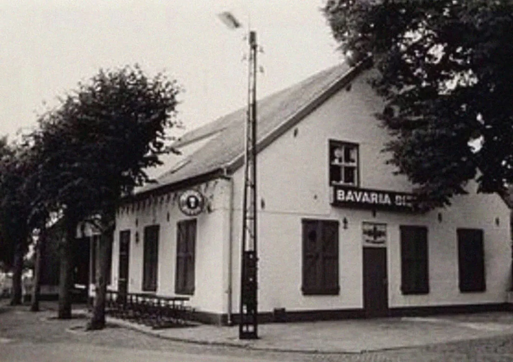
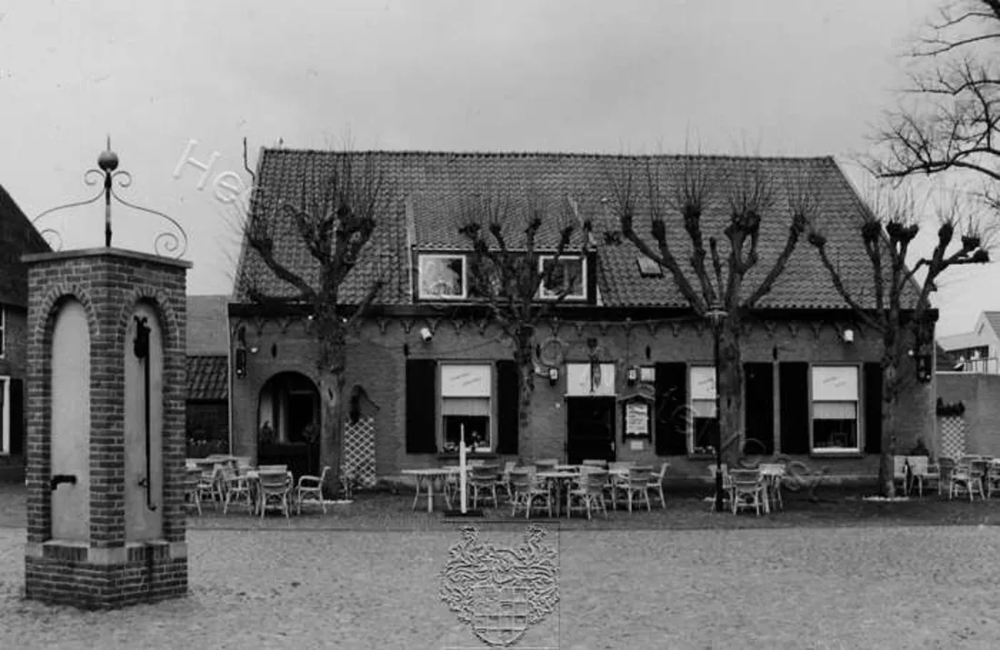
Hannes de Pomper voorziet de stoomtram tijdens de stop in Nistelrode van vers water.
Sjef Wouters runt in het pand een bakkerij, grutterij en café. Na de ‘leste’ mis op zondag komen vele Nisseroise mensen langs voor een borreltje.
Herman Hermans neemt de zaak over, bouwt flink uit en verbouwt de naastgelegen oude boerderij tot De Brouwershoeve.
’t Pumpke staat vooral bekend als discotheek.
’t Pumpke is eetcafé. De laatste verbouwing gaf een nieuwe impuls om dat nog in lengte van jaren voort te zetten.
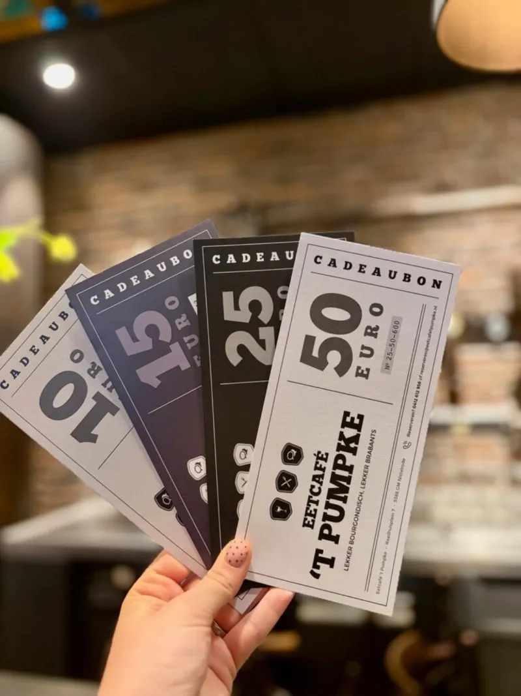
Een verrassing die altijd gewaardeerd wordt: een dinerbon voor een gezellige lunch, diner of borrel bij ’t Pumpke. Kies uit € 10, € 15, € 25 of € 50. Wij pakken de bon leuk voor je in. De bonnen haal je op bij ons in het restaurant.
Ons ijs wordt huisgemaakt bij IJssalon De Buren, onze buren. Daar haal je ook de ijstaarten en in december het kerst-afhaalmenu op.
ijssalondeburen.nlZoek je een leuke bijbaan of juist een vaste baan? Wij zijn altijd op zoek naar enthousiaste nieuwe collega’s. Bel ons op 0412 612 956, mail of kom gezellig langs.
Mail ons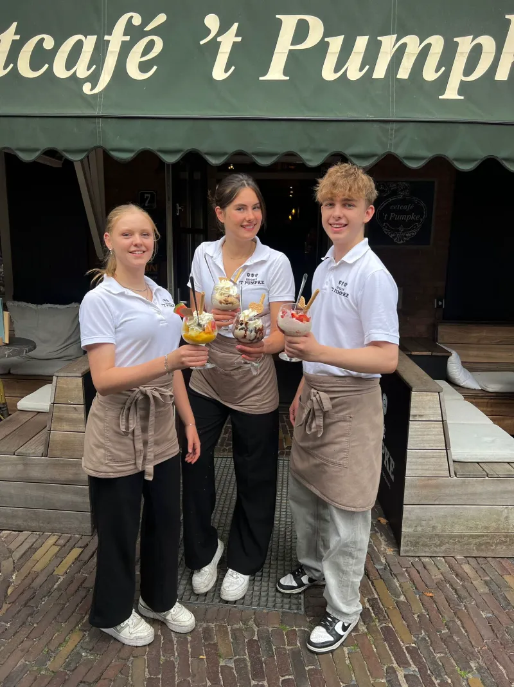
Wil jij lekker bijverdienen en samen met gezellige collega’s werken?
Wil jij onze keuken ondersteunen en de leukste gerechten klaarmaken samen met gezellige collega’s?
Tover jij een lach op ieders gezicht en zet je nét een stapje extra voor onze gasten?
Wil je zeker zijn van een plaatsje binnen? Reserveer dan online. Op het terras reserveren we niet, maar we kijken graag mee voor een leuk plekje.
Eetcafé ’t Pumpke| Maandag | 11.00 – 21.00 |
|---|---|
| Dinsdag | 11.00 – 21.00 |
| Woensdag | 11.00 – 21.00 |
| Donderdag | 11.00 – 21.00 |
| Vrijdag | 11.00 – 21.00 |
| Zaterdag | 11.00 – 21.00 |
| Zondag | 11.00 – 21.00 |
Keuken elke dag geopend.